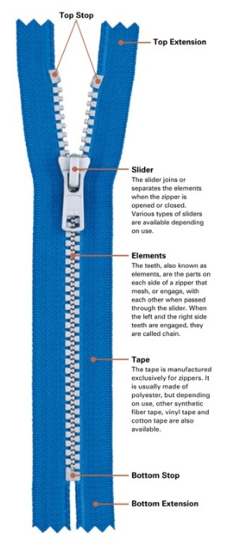

MYOG Patterns
A collection of pattern generators and sewing patterns for outdoor enthusiasts who prefer to Make Your Own Gear (MYOG)
A collection of pattern generators and sewing patterns for outdoor enthusiasts who prefer to Make Your Own Gear (MYOG)

 This pattern generator details the 2D fabric panel sized needed to achieve desired 3D dimensions of a rectangular zip pouch. Referencing the image, provide the desired dimensions for finished size pouch.
This pattern generator details the 2D fabric panel sized needed to achieve desired 3D dimensions of a rectangular zip pouch. Referencing the image, provide the desired dimensions for finished size pouch.

There are tons of fabric options. Here are a few recommendations.


Moving on
Overview
Content
| Size | Chain Type | Tape Width | Combined Width |
|---|---|---|---|
| #3 | Coil | 3/8" | 1" |
| #5 | Coil | 1/2" | 1 1/4" |